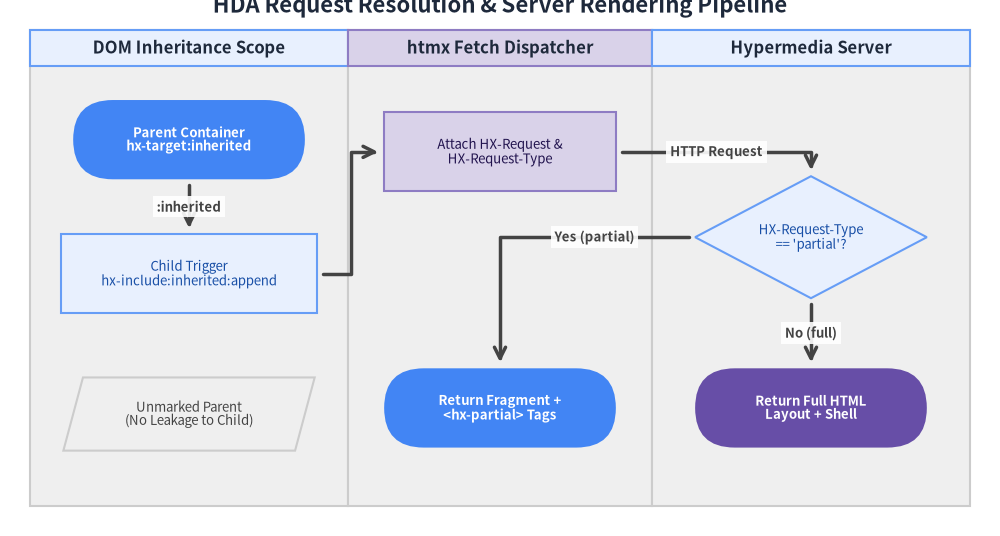
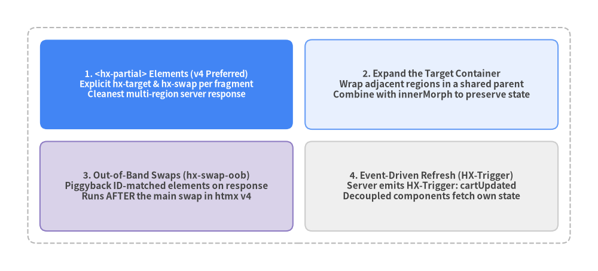

2. ハイパーメディア設計 (Hypermedia Architecture)
htmx v4.0.1 におけるクリーンな ハイパーメディア駆動アプリケーション（HDA: Hypermedia-Driven Application） 設計は、明示的な属性継承（:inherited と :append）、部分更新と全体遷移の交渉（HX-Request-Type）、そして マルチリージョン更新（<hx-partial>、hx-swap-oob、HX-Trigger）という 3 つのアーキテクチャ機構を軸に構成されます。

Source Code
from drawlib import canvas
from drawlib.diagrams.flow import Data, Decision, End, FlowDiagram, Process, Start
from drawlib.styles import Styles
canvas.clear()
canvas.setup(width=164, height=88)
flow = FlowDiagram(
node_style=Styles.Neutral.patch(text_size=9.5),
edge_style=Styles.DarkBold,
edge_text_style=Styles.DarkBold.patch(text_size=9.5),
title="HDA Request Resolution & Server Rendering Pipeline",
width=154,
height=78,
lane_orientation="vertical",
)
# 3 Vertical Swimlanes: 52 + 50 + 52 = 154 (Centers at X = 26, 77, 128)
flow.add_lane("DOM Inheritance Scope", width=52, style=Styles.Neutral, header_style=Styles.PrimaryNeutral)
flow.add_lane("htmx Fetch Dispatcher", width=50, style=Styles.Neutral, header_style=Styles.SecondaryNeutral)
flow.add_lane("Hypermedia Server", width=52, style=Styles.Neutral, header_style=Styles.PrimaryNeutral)
parent = flow.add(
Start("Parent Container\nhx-target:inherited", width=38, height=13, style=Styles.PrimaryFlat.patch(text_size=9.5), text_style=Styles.WhiteBold.patch(text_size=9.5)),
xy=(26, 60),
)
child = flow.add(
Process("Child Trigger\nhx-include:inherited:append", width=42, height=13, style=Styles.PrimaryNeutral.patch(text_size=9.5)),
xy=(26, 38),
)
isolated = flow.add(
Data("Unmarked Parent\n(No Leakage to Child)", width=38, height=12, style=Styles.Neutral.patch(text_size=9.5)),
xy=(26, 15),
)
headers = flow.add(
Process("Attach HX-Request &\nHX-Request-Type", width=38, height=13, style=Styles.SecondaryNeutral.patch(text_size=9.5)),
xy=(77, 58),
)
check_type = flow.add(
Decision("HX-Request-Type\n== 'partial'?", width=38, height=20, style=Styles.PrimaryNeutral.patch(text_size=9.5)),
xy=(128, 44),
)
partial_resp = flow.add(
End("Return Fragment +\n<hx-partial> Tags", width=38, height=13, style=Styles.PrimaryFlat.patch(text_size=9.5), text_style=Styles.WhiteBold.patch(text_size=9.5)),
xy=(77, 16),
)
full_resp = flow.add(
End("Return Full HTML\nLayout + Shell", width=38, height=13, style=Styles.SecondaryFlat.patch(text_size=9.5), text_style=Styles.WhiteBold.patch(text_size=9.5)),
xy=(128, 16),
)
parent.connect(child, label=":inherited", padding=1.0)
child.connect(headers, start_side="right", end_side="left", padding=1.0)
headers.connect(check_type, label="HTTP Request", start_side="right", end_side="top", padding=1.0)
check_type.connect(partial_resp, label="Yes (partial)", start_side="left", end_side="top", padding=1.0)
check_type.connect(full_resp, label="No (full)", start_side="bottom", end_side="top", padding=1.0)
flow.draw(xy=(5.0, 5.0))
canvas.save()
2.1 ハイパーメディア駆動アプリケーション (HDA) の設計原則
ハイパーメディア駆動アプリケーションでは、ブラウザ上の JavaScript メモリ内にサーバーと重複するドメインモデルを保持しません。代わりに HTML そのものがアプリケーション状態のエンジン（HATEOAS） として機能します。
- アプリケーション状態はサーバーに一元化: 認証・権限チェック・ページネーション・ビジネスバリデーションはすべてバックエンド言語（Python, Go, Rust, Ruby, Java, TypeScript, PHP など）で実行します。
- ハイパーメディアコントロールによる状態遷移: サーバーが返す HTML フラグメント自体に
hx-post、hx-delete、hx-target、hx-status:XXXが埋め込まれ、次に実行可能な操作を表現します。 - 明確なコンポーネント境界: セクション単位の
:inherited属性と相対セレクタ（closest tr,find .status）を組み合わせることで、グローバル ID に依存しない高いモジュール性を維持できます。
2.2 明示的な属性継承 (:inherited と :append)
htmx 2 では、ほぼすべての属性（hx-target, hx-swap, hx-confirm, hx-boost, hx-include など）が暗黙的にすべての子孫要素へと継承されていました。そのため、モーダルや入れ子カードなどの複雑なレイアウトで親の属性が意図せず子要素へ漏洩する問題が頻発していました。
htmx v4.0.1 では、属性継承はデフォルトで「明示的」です。 親要素の属性を子孫へ継承させたい場合は、属性名に :inherited 修飾子を付与します。
<!-- Parent container explicitly shares hx-target, hx-swap, and hx-headers with descendants -->
<div hx-target:inherited="#workspace-panel"
hx-swap:inherited="innerMorph"
hx-headers:inherited='X-Workspace-Id: "ws-900"'>
<!-- Both buttons inherit target="#workspace-panel", swap="innerMorph", and the header -->
<button hx-get="/workspace/overview">Overview</button>
<button hx-get="/workspace/metrics">Metrics</button>
<!-- A nested widget can override hx-target locally without affecting siblings -->
<button hx-post="/workspace/ping" hx-target="this" hx-swap="textContent">
Ping Server
</button>
</div>
継承された属性への追記 (:inherited:append)
hx-include、hx-vals、hx-headers のように複数の値を統合できる属性では、親の継承値を上書きせず追記するために :inherited:append 修飾子をチェーンできます。
<!-- Ancestor provides the CSRF token selector -->
<section hx-include:inherited="[name='csrf_token']">
<!-- Sub-container appends a filter form selector while keeping csrf_token -->
<div hx-include:inherited:append="#active-filters">
<button hx-post="/reports/export" hx-include:inherited:append="[name='format']">
Export CSV
</button>
</div>
</section>
| 継承メカニズム | 記述例 | htmx v4.0.1 における挙動 |
|---|---|---|
| ローカルのみ（デフォルト） | <div hx-target="#out"> |
その <div> 自身にのみ適用され、子要素には一切継承されない。 |
| 明示的継承 | <div hx-target:inherited="#out"> |
自身の hx-target を持たないすべての子孫要素へ #out を継承する。 |
| 追記型の明示的継承 | <div hx-vals:inherited:append="role:admin"> |
祖先要素の hx-vals:inherited を保持したまま新しいキーやセレクタをマージする。 |
| メタ文字のカスタマイズ | <meta name="htmx-config" content="metaCharacter:@"> |
テンプレートエンジンが : を予約している場合に hx-target@inherited と記述可能にする。 |
| グローバル暗黙的継承 | htmx.config.implicitInheritance = true |
htmx 2 互換の自動継承モードをページ全体で有効化する（移行用オプション）。 |
2.3 部分更新とフルページリクエストの判別 (HX-Request & HX-Request-Type)
堅牢な HDA 設計では、同一の URL エンドポイントで ページ内の部分スワップ と ブラウザの直接アクセス・リロード（フルページ応答） の両方をサポートすることが推奨されます。htmx v4.0.1 はすべてのリクエストに以下の 2 つのヘッダーを送信します。
HX-Request: true: htmx が発行するすべてのfetch()リクエストに常時付与されます。HX-Request-Type: "partial" | "full": htmx 4 で新設されたヘッダーで、クライアントが部分フラグメントと完全な HTML 文書のどちらを期待しているかを明示します。"partial":hx-targetが特定の部分要素（body以外）を指しており、hx-selectも使われていない場合に送信されます。"full":document.bodyをターゲットとする場合（hx-boost:inherited="true"など）、ブラウザ履歴の復元時、またはhx-selectでフルページ応答から一部を切り出す場合に送信されます。
# Example Server Controller (Python / FastAPI / Flask style)
def list_projects(request):
projects = db.query_projects(filter=request.GET.get("q"))
# When htmx requests a targeted partial update, render only the table fragment
if request.headers.get("HX-Request-Type") == "partial":
return render_template("partials/project_rows.html", projects=projects)
# For direct browser visits, boosted body navigations, or history restores:
return render_template("pages/projects_full.html", projects=projects)
2.4 複数の画面領域を同時に更新する4つのパターン
実際のアプリケーションでは、「カートに商品を追加する」「チケットを完了にする」といった 1 回の操作で、画面内の複数の独立した領域（メインテーブル、サイドバーの件数バッジ、トースト通知など）を同時に更新したい場面が多々あります。htmx v4.0.1 では 4 つの設計パターンを使い分けることができます。

Source Code
from drawlib.canvas import save, setup
from drawlib.icons import phosphor
from drawlib.smartarts import CardList, GridLayout
from drawlib.styles import Styles
setup(width=172, height=78)
grid = GridLayout(
num_column=2,
num_row=2,
style=Styles.Neutral.patch(shape_r=2.0),
text_style=Styles.DarkBold.patch(text_size=11.0),
)
# Top-Left (row=1, col=0): Pattern 1 - <hx-partial> (Preferred in v4)
grid.add(
position=(0, 1),
width=1,
height=1,
text="1. <hx-partial> Elements (v4 Preferred)\nExplicit hx-target & hx-swap per fragment\nCleanest multi-region server response",
style=Styles.PrimaryFlat.patch(shape_r=2.0),
text_style=Styles.WhiteBold.patch(text_size=10.5),
)
# Top-Right (row=1, col=1): Pattern 2 - Expand the Target
grid.add(
position=(1, 1),
width=1,
height=1,
text="2. Expand the Target Container\nWrap adjacent regions in a shared parent\nCombine with innerMorph to preserve state",
style=Styles.PrimaryNeutral.patch(shape_r=2.0),
)
# Bottom-Left (row=0, col=0): Pattern 3 - Out-of-Band (hx-swap-oob)
grid.add(
position=(0, 0),
width=1,
height=1,
text="3. Out-of-Band Swaps (hx-swap-oob)\nPiggyback ID-matched elements on response\nRuns AFTER the main swap in htmx v4",
style=Styles.SecondaryNeutral.patch(shape_r=2.0),
)
# Bottom-Right (row=0, col=1): Pattern 4 - HX-Trigger Events
grid.add(
position=(1, 0),
width=1,
height=1,
text="4. Event-Driven Refresh (HX-Trigger)\nServer emits HX-Trigger: cartUpdated\nDecoupled components fetch own state",
style=Styles.Neutral.patch(shape_r=2.0),
)
grid.draw(
xy=(8.0, 8.0),
width=156.0,
height=62.0,
margin=3.5,
outer_style=Styles.MutedDashed.patch(shape_r=2.5),
)
save()
パターン 1: <hx-partial> タグ（htmx 4 推奨）
htmx 4 で導入された <hx-partial> を使用すると、サーバーレスポンス内に複数の独立した更新フラグメントを同梱し、それぞれに固有の hx-target と hx-swap を明示できます。
<!-- Server Response using <hx-partial> -->
<hx-partial hx-target="#todo-list" hx-swap="beforeend">
<li id="todo-108">Deploy htmx v4.0.1 to production</li>
</hx-partial>
<hx-partial hx-target="#pending-count" hx-swap="textContent">
4 items left
</hx-partial>
<hx-partial hx-target="#toast-container" hx-swap="afterbegin">
<div class="toast success">Task created!</div>
</hx-partial>
[!IMPORTANT] サーバー応答が
<hx-partial>要素のみで構成され、メインの HTML 本文が空である場合、htmx v4.0.1 はメインターゲットが空で上書きされるのを自動的に防ぎます（メインスワップをスキップ）。もし<hx-partial>処理と同時にメインターゲットを空にクリアしたい場合は、hx-swapにswapEmpty:true修飾子を追加してください。
パターン 2: ターゲットコンテナの拡張（innerMorph との併用）
更新したい複数の領域が DOM 上で近接している場合は、共通の親コンテナをターゲットにし、hx-swap="innerMorph" を組み合わせることでフォーカスや入力状態を維持したまま一括更新できます。
<div id="checkout-panel">
<ul id="cart-items">...</ul>
<div id="order-summary">Total: $49.00</div>
<button hx-post="/cart/apply-coupon"
hx-target="#checkout-panel"
hx-swap="innerMorph">
Apply Coupon
</button>
</div>
パターン 3: Out-of-Band スワップ (hx-swap-oob)
サーバー応答のトップレベル要素に hx-swap-oob="true"（または hx-swap-oob="<swap-style>:<css-selector>"）を付与すると、メインスワップが完了した後に対象 ID またはセレクタへ自動的にスワップされます。
<!-- Main response swapped into primary hx-target -->
<tr id="row-12"><td>Updated Item</td><td>$25.00</td></tr>
<!-- Out-of-band element swapped into #cart-total after the main swap -->
<span id="cart-total" hx-swap-oob="true">$125.00</span>
<!-- Out-of-band append into #audit-log -->
<tbody hx-swap-oob="beforeend:#audit-log">
<tr><td>Item 12 updated at 12:00 UTC</td></tr>
</tbody>
パターン 4: HX-Trigger レスポンスヘッダーによるイベント駆動更新
変更操作が疎結合な別ウィジェット（グラフや集計パネルなど）に影響する場合は、サーバーから HX-Trigger ヘッダーを送出し、各ウィジェット側で from:body トリガーを使って自身のデータを再取得させます。
HTTP/1.1 200 OK
Content-Type: text/html
HX-Trigger: {"invoicePaid": {"invoiceId": 942}, "refreshMetrics": true}
<!-- Independent dashboard widget refreshes itself whenever refreshMetrics fires on body -->
<div id="revenue-summary"
hx-get="/dashboard/revenue-summary"
hx-trigger="refreshMetrics from:body"
hx-swap="innerMorph">
Loading metrics...
</div>